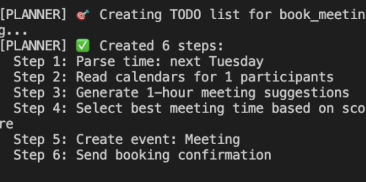

First Agent Implementation
February 14, 2026
Mid-February marked a significant milestone for our project as we got to test with the API key and successfully implemented our first agent!
Testing with the API
After weeks of preparation, we finally got the opportunity to test our code with the OpenAI API key. This was a crucial step that allowed us to move from theoretical planning to actual implementation and testing.
The API integration worked smoothly thanks to the helper functions we had built in January. We were able to send natural language queries to the API and receive structured responses that our system could process.
Planner agent
Our first implemented agent was the planner agent, designed to create to-do lists based on user input. The planner agent can:
- Parse natural language requests for task creation
- Organise tasks by priority and deadline
- Generate structured to-do lists
- Integrate with the user's calendar to check for scheduling conflicts

The planner agent serves as a proof of concept for our multiagent architecture. It demonstrates how individual agents can leverage our helper functions to perform specific tasks while maintaining clean separation of concerns.
Switching to Google Calendar
During development, we encountered some issues with Azure API secrets that were causing authentication problems. After evaluating our options, we made the decision to switch to Google Calendar API. This change actually improved our system in several ways:
- More straightforward authentication process
- Better documentation and community support
- More reliable API performance
- Easier integration with other Google services
The switch required some refactoring of our helper functions, but thanks to our modular architecture, we were able to make the transition relatively smoothly.
Moving forward
With the planner agent working successfully, we're now confident in our architecture and ready to implement the remaining agents: the scheduler agent and the orchestrator that will coordinate between all agents. We're on track to have a full prototype by the end of February.